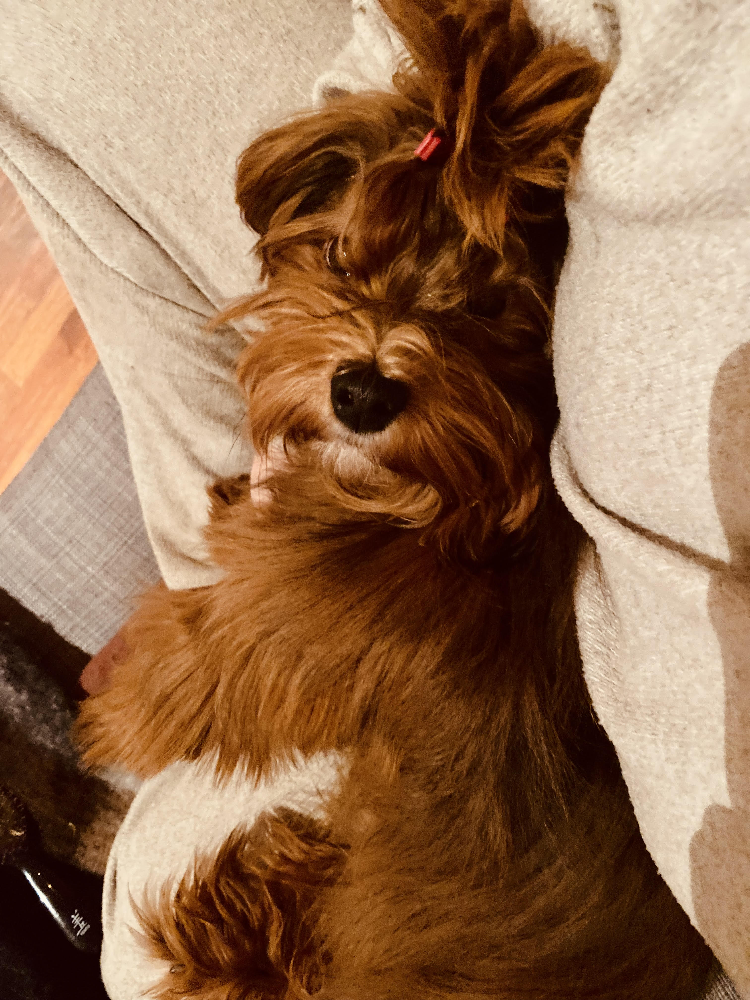

Bichon Havanais: En Perfekt Familiehund
Velkommen til en verden av sjarm og eleganse! Bichon Havanais, også kjent som Havaneser, er en liten hund med et stort hjerte. Denne rasen er elsket for sitt glade temperament, silkemyke pels og evne til å bringe glede til ethvert hjem.
Galleri
Historien bak rasen
Bichon Havanais har sin opprinnelse på Cuba, hvor den ble avlet frem som en selskaps- og gårdshund. Fra Middelhavsområdet via spanske handelsmenn på 1700-tallet, utviklet denne hunden seg til å bli en "cubansk silkehond". Etter politiske endringer på 1950-tallet ble rasen reddet av cubanske familier i eksil, spesielt i USA.
Karakteristikk og utseende
En Bichon Havanais veier mellom 4–7 kg og måler 23–27 cm i høyden. Den har store, mørke øyne som gir den et vennlig uttrykk. Den lange, bølgede pelsen kan være hvit, brun, sort eller gylden, og den krever jevnlig stell. Heldigvis røyter den ikke, noe som gjør den ideell for allergikere.
Temperament
Havaneseren er en sosial, hengiven og leken hund. Den elsker å underholde familien med morsomme påfunn og tilpasser seg både aktive og rolige hjem. Med sitt klovnaktige vesen og sitt rolige lynne er den en perfekt følgesvenn for både store og små.
Aktivitetsnivå
Selv om den ikke er svært energisk, trenger Havaneseren daglig mosjon og mental stimulering. Enten det er en tur i parken, lek i hagen eller agility-trening, trives den med å være i aktivitet. Den lille størrelsen gjør den ideell for både byleiligheter og hus på landet.
Helse og pleie
Havaneseren har en forventet levealder på 12–16 år og er generelt en sunn rase. Vanlige helseutfordringer kan inkludere patellalukasjon og øyeproblemer. Regelmessig veterinæroppfølging og stell av pelsen, ørene og tennene bidrar til å holde den sunn og glad.
Er Havaneseren noe for deg?
Med sin allsidighet og sjarmerende personlighet passer Bichon Havanais for alle som ønsker en liten, hengiven følgesvenn. Den trives like godt i en aktiv familie som med en roligere eier, så lenge den får kjærlighet og oppmerksomhet.
Valper
